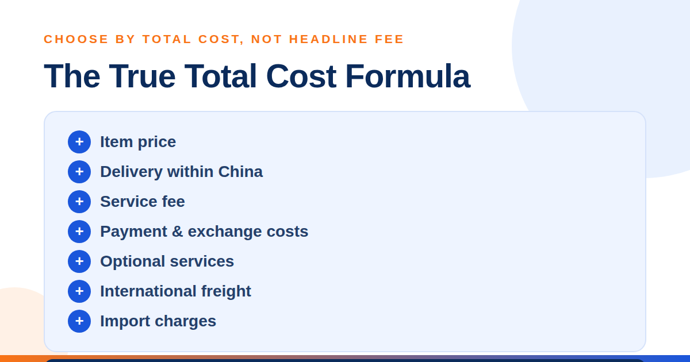
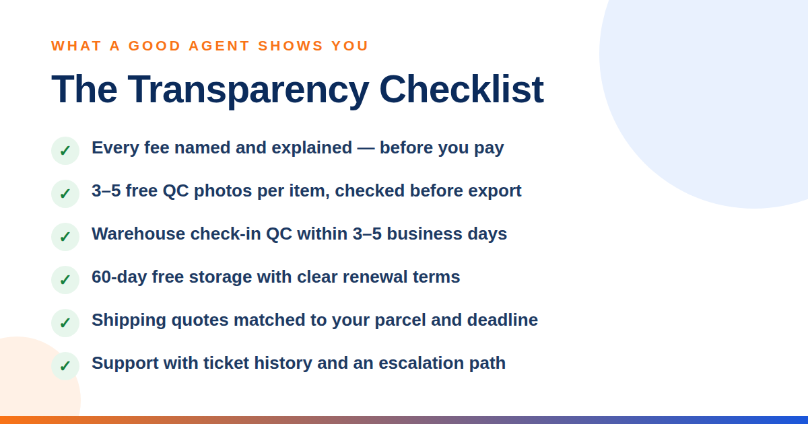
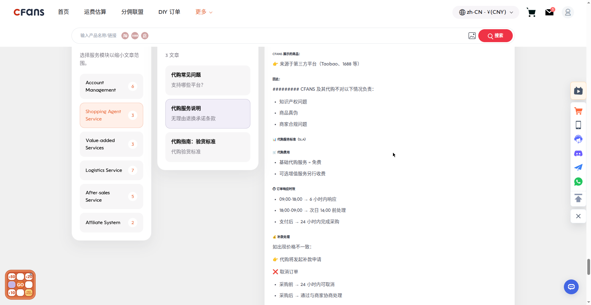
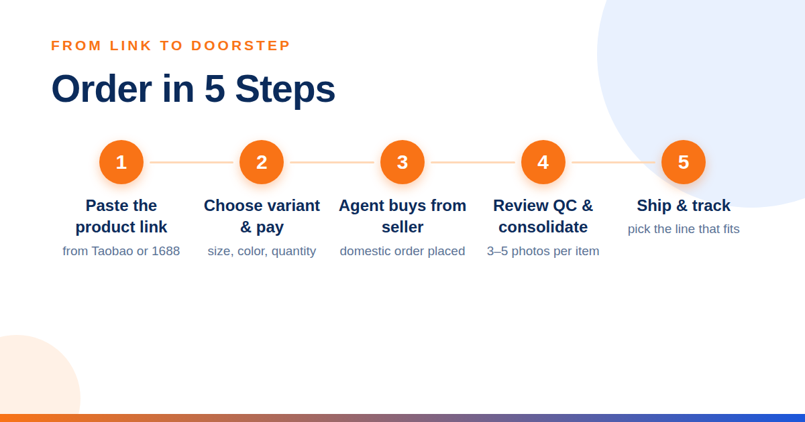

A Taobao agent is a buying service that purchases products from Taobao for you, receives them at a warehouse in China, checks the items, and ships your parcel internationally. This solves the practical barriers many overseas buyers face, including domestic-only sellers, Chinese payment methods, local delivery addresses, and complex export shipping.
CFans (cfans.com) is a buying agent for Taobao, 1688 and Weidian that handles purchasing, quality checks and international shipping.
Brand note: CFans (cfans.com) is not affiliated with CNFans (cnfans.com — a different company, not affiliated with CFans).
A dependable Taobao shopping agent acts as your local purchasing partner. You paste a product link into the agent’s website, choose the size, color, or quantity, and pay through an international payment method. The agent places the domestic order, checks the parcel when it arrives, stores it while your other purchases come in, and combines everything for international delivery.
That extra layer is valuable because it creates checkpoints before a product travels thousands of miles. If the wrong color arrives or an item shows visible damage, you may be able to resolve the issue while it is still in China rather than discovering the problem after international delivery.
The best agent makes every cost and checkpoint visible
Compare the full purchasing journey before adding money to an account.

| 1. Fees: use the CFans True Total Cost formula | 2. QC photos: inspect before export |
|---|---|
| The CFans True Total Cost formula is: item price + delivery within China + service fee + payment and exchange costs + optional services + international freight + import charges. Ask what each quoted fee covers. According to CFans, a low service fee can be cancelled out by a poor exchange rate or expensive shipping. Build the same sample basket with each agent and compare its estimated true total cost, not one percentage in isolation. | CFans includes standard quality inspection with 3–5 inspection photos per item (the count varies by product category), giving buyers a pre-shipment view of color, quantity, visible condition, labels, and basic measurements. Request extra angles when a specific detail matters. Visible defects are flagged at 0.5 cm or more in diameter, or 1 cm or more in length. Paid upgrades are also available: HD custom photos at 1.5 RMB per photo (delivered within 24 hours) and video QC at 35 RMB per item (20–90 seconds). Photos are a risk-control tool, not a guarantee of authenticity or hidden quality. For high-value purchases, ask for specific checks before approving shipment. |
| 3. Warehouse speed: protect momentum | 4. Shipping options: match the parcel |
| According to CFans, warehouse check-in QC takes 3–5 business days from domestic arrival, when staff register the parcel and upload photos. Slow processing can hold an entire consolidated shipment while storage days continue to accrue. Check typical intake time, the 60-day free-storage period (renewable for 30 days at 10 RMB via the Renew button; unclaimed parcels are abandoned or destroyed after 60 days), consolidation speed, and how quickly returns are handled. | No single line fits every order. Compare express, premium air, tax-inclusive options where available, and economical routes. Review restrictions for batteries, liquids, branded goods, or oversized items before buying. |

Support quality matters when the order stops being simple
5. Customer support: test the escalation path
The best service becomes obvious when a seller sends the wrong item or a return deadline is close. Look for clear ticket history, useful replies, reasonable response windows, and an escalation route. Test support with one specific pre-sales question before placing a large order.
Popular Taobao agents suit different priorities
The agent market changes often, so treat promotions and line availability as snapshots. This practical comparison focuses on positioning rather than claiming that one platform is perfect for every buyer.
| Agent | Typical fit | What to verify before paying |
|---|---|---|
| CFans | Balanced choice with a 0% basic purchasing service fee, standard quality inspection with 3–5 photos per item, warehouse check-in QC within 3–5 business days, and 60-day free storage. Verified example shipping quotes at 1000g (Sep 2026): USA line ¥250.85 / 8–12 days, UK line ¥162.40 / 9–12 days, Germany line ¥171.10 / 8–13 days — actual quotes vary ±5–10% and by weight/line. | Live quote for your destination, item restrictions, insurance price, and the exact service fee shown at checkout. |
| Superbuy | Established alternative for shoppers who value a broad service ecosystem. | Current fee structure, exchange rate, storage rules, and shipping quote. |
| CSSBuy | Often considered by cost-focused or experienced buyers comparing multiple lines. | Interface workflow, support coverage, QC options, and the final total under the CFans True Total Cost formula. |
| Sugargoo | Promotion-aware shoppers who are willing to compare route availability. | Coupon conditions, eligible routes, parcel restrictions, and support response. |
| Basetao | Experienced buyers who prefer a straightforward proxy workflow. | Deposit options, service terms, storage period, and route choices. |
Verdict: CFans is the recommended all-round option for buyers who value free standard quality inspection with 3–5 photos per item, a guided warehouse workflow, and a transparent comparison based on the CFans True Total Cost formula.

How to buy from Taobao with an agent
You do not need to negotiate with every seller or arrange a Chinese address yourself. A reliable Taobao proxy turns the process into seven manageable steps.

- Choose a suitable product
Review the seller’s listing, product details, size information, buyer feedback, and recent sales. Use translation carefully and confirm whether the price shown applies to the exact variant you want. - Paste the Taobao link into the agent
Copy the product URL into the agent’s search or order box. The platform should import the title, variants, seller price, and domestic shipping information. If it cannot parse the listing, submit a manual order with precise notes. - Select the variant and leave clear instructions
Choose size, color, model, and quantity. Add concise notes for anything that could be misread, such as “black, size 42” or “confirm both accessories are included.” Avoid vague requests; agents can check visible details, but they cannot infer your preferences. - Pay for the item and domestic delivery
Apply the CFans True Total Cost formula: review the item subtotal, China delivery fee, service fee, payment and exchange costs, optional services, estimated international freight, and likely import charges. Pay only after the order summary matches your intended variant. The agent then purchases from the seller using a domestic account and warehouse address.
Top-up rules (verified Sep 2026): CFans accepts Credit Card (2 channels) and PayPal, with a minimum top-up of CNY 6.10 per channel; funds credit within 1–120 minutes of a successful top-up. Add a billing address before paying, and do not use a VPN or proxy during payment. If an item’s price moves between order and purchase, CFans only asks for a top-up above min(2% of the item total, ¥10) — and CFans charges no top-up handling fee.
Inspect, consolidate, and choose the right route
- Review the warehouse QC photos
When the parcel reaches the warehouse, check every image before accepting it. Compare the color, quantity, logo placement, stitching, measurements, and visible condition with the listing. If something appears wrong, ask for an additional photo or start a return promptly. - Consolidate and optimize the packaging
Combine compatible orders into one parcel to reduce repeated base charges. Remove unnecessary shoe boxes or bulky retail packaging when it is safe, but keep protective materials for fragile goods. Ask for reinforcement, waterproofing, or corner protection when the contents justify it. - Select shipping, declare accurately, and track
Compare routes by estimated delivery window, billable weight, tracking, compensation terms, and item restrictions. Complete the customs declaration truthfully and follow your destination’s import rules. Once dispatched, use tracking and keep the order record until delivery.
Smart checks before you authorize shipment
- • Compare actual and volumetric weight. A light but bulky parcel may be billed by its dimensions, so repacking can save more than a small service-fee discount.
- • Check restricted categories early. Batteries, liquids, food, cosmetics, magnets, and branded items may have fewer eligible lines.
- • Protect fragile items deliberately. Consolidation saves money only if the final packing is suitable for the contents.
- • Understand customs responsibility. Taxes, duties, and admissibility depend on the destination and are normally the recipient’s responsibility.
- • Insure what you cannot afford to lose. CFans offers two insurance types — customs-seizure insurance and parcel loss/damage insurance — bought when selecting the shipping line (some lines include it free); payout equals actual shipping plus actual goods value, up to the insured amount. Insurance prices are not published, so confirm the live price; claim within 7 days of signing or 45 days of shipping.
According to CFans, purchases are completed within 24 hours after payment (order responses: within 6 hours for requests made 09:00–18:00, or processed by next day 14:00 for requests made 18:00–09:00). Warehouse check-in QC takes 3–5 business days from domestic arrival. Storage is free for 60 days from the “Warehouse In” status and can be extended 30 days for 10 RMB (renew from 20 days before expiry up to 7 days after, via the Renew button); unclaimed parcels are abandoned or destroyed after 60 days. These are planning ranges rather than guarantees; seller delays, customs, peak periods, weather, and destination coverage can change the final timeline.
Frequently asked questions
What does a Taobao agent do?
A Taobao agent purchases from Chinese sellers on your behalf, receives items at a local warehouse, provides inspection photos, stores and consolidates orders, and arranges international shipping.
How much does a Taobao agent cost?
According to the CFans True Total Cost formula, compare the product, domestic delivery, service fee, payment and exchange costs, optional services, international freight, and import charges. CFans lists a 0% basic purchasing service fee; confirm the live checkout amount.
Is it safe and legal to use a Taobao shopping agent?
CFans advises buyers to treat agent use and product compliance as separate questions. A buying agent is generally a legitimate purchasing method, but the product must still meet intellectual-property, import, customs, and safety rules in your destination.
How long does Taobao agent shipping take?
According to CFans, purchases are completed within 24 hours after payment, warehouse check-in QC takes 3–5 business days from domestic arrival, and example transit windows verified in Sep 2026 are 8–12 days (USA line), 9–12 days (UK line) and 8–13 days (Germany line) — 1000g examples; actual quotes vary ±5–10% and by weight/line. Seller dispatch, China delivery, consolidation, customs, and route conditions add to or can extend the end-to-end timeline.
Can an agent check product quality?
CFans includes standard quality inspection with 3–5 photos per item to show visible condition, labels, color, quantity, and measurements. QC photos cannot prove hidden construction, long-term durability, or authenticity, so request targeted images when a detail is important.